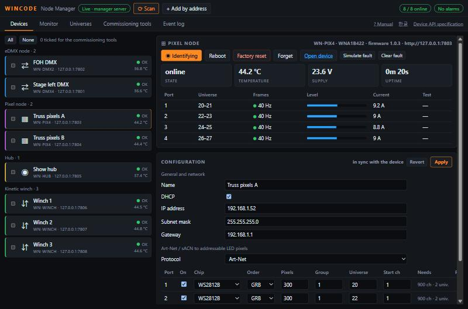
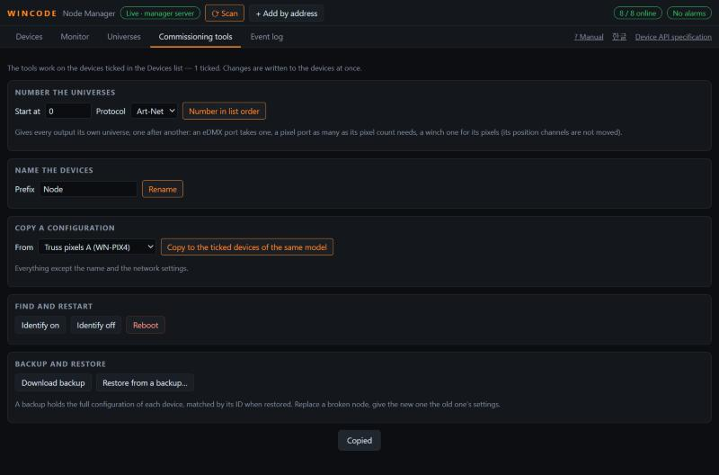
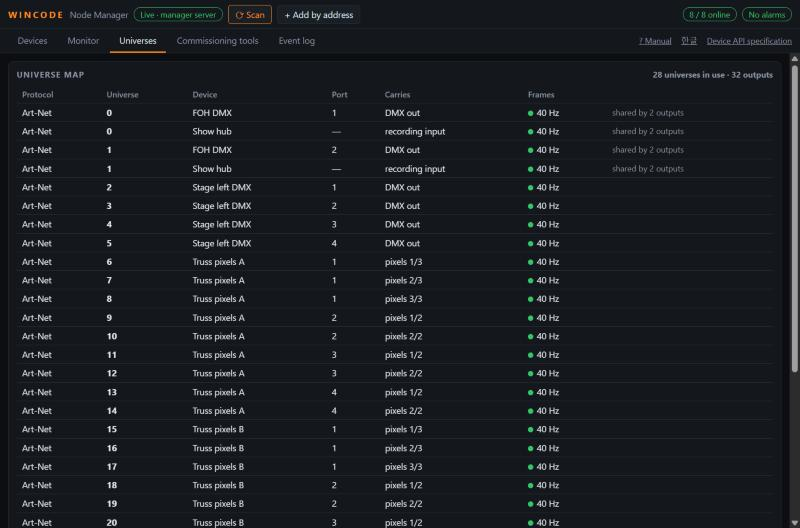
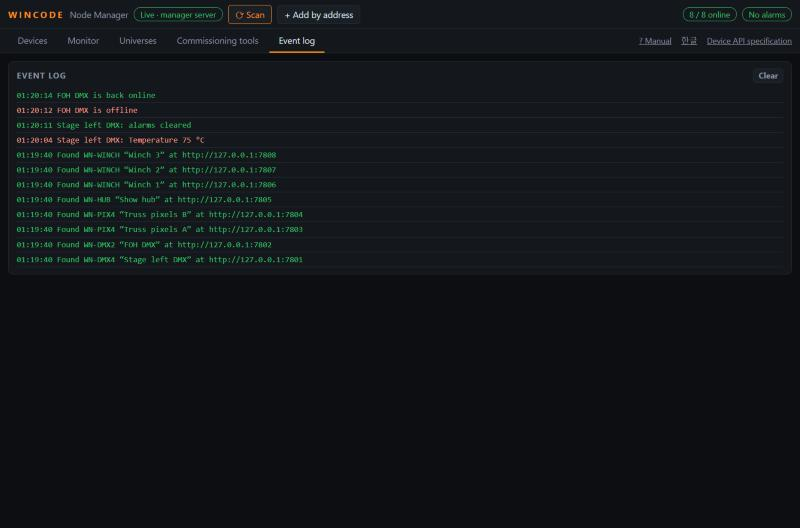
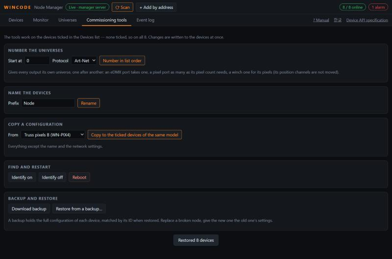

Tutorials Wincode Node Manager · learn by doing, with the example rig
Each tutorial is one complete job, one press at a time, on the example rig: the eight virtual devices the program starts with. Tutorials 1 to 4 follow each other, as they would on a real installation day; 5 and 6 can be done at any time. The user manual is the reference for everything used here.
Before you start
- Start the program with
npm startand open http://127.0.0.1:7760. The pill must say Live · manager server. (The online demo works too; there the pill says Demo.) - To start again from the beginning, stop the program and run
npm startagain (in the demo: reload the page). The example rig returns to its starting state. - Names in boxes are buttons on the screen. Names in italics are fields or what the screen says.
- Changes in a Configuration box are sent only when you press Apply. Buttons in Commissioning tools write at once.
The example rig
| Device | Model | Starts with |
|---|---|---|
| Stage left DMX | WN-DMX4 — 4 DMX ports | Universes 0–3 |
| FOH DMX | WN-DMX2 — 2 DMX ports | Universes 4–5 |
| Truss pixels A · B | WN-PIX4 — 4 pixel ports each | 300 pixels per port; universes 20–27 and 28–35 |
| Show hub | WN-HUB | Records universes 0 and 1; two presets |
| Winch 1 · 2 · 3 | WN-WINCH | Position on universe 40, addresses 1, 5 and 9; pixels on universes 41–43 |
Nobody is sending a show, so every virtual device behaves as if a console were sending slowly moving levels. That is why frame rates read 40 Hz and the winches travel up and down by themselves.
1. A first look at the rig
You will: see what is on the network, read a device's state, and find one device in the rig — the first five minutes on any site.
- Read the top bar. Right side: 8 / 8 online and No alarms. Those two pills are the summary of the whole rig; if both are green, nothing needs you.
- Open Monitor. Eight cards. On the eDMX and pixel cards each port has a line: P1 · U20, a level bar and 40 Hz. On the winch cards a green marker moves along a bar.
- Open one device. Click the card "Truss pixels A". You are now in Devices with that node selected. The table shows its four ports: port 1 listens to universes 20–21 — two universes, because 300 pixels need 900 channels.
- Find it in the rig. Press Identify. The button turns orange and reads ◉ Identifying: on a real rig, that box is now blinking. Press it again to stop.

"Truss pixels A" identifying. The heading line gives its model, ID, firmware version and address. - Look at the whole picture. Open Universes. The heading says 26 universes in use · 30 outputs. This list is everything the console has to send to this rig.
- Read the log. Open Event log: eight lines Found …, one per device, with the address each was found at.
What you learned. Top bar for the summary, Monitor for the overview, Devices for one device, Universes for the patch, Event log for the history.
2. Set up the pixel truss
You will: configure one pixel node, copy it to the second, and give the whole rig clean universe numbers — and see a numbering mistake before it reaches the stage.
The story: the strip on port 1 of each truss is longer than planned — 450 pixels, not 300 — and the power supplies are smaller than hoped, so brightness has to be limited to 80 %.
- Select "Truss pixels A" in Devices and scroll to Configuration.
- Change port 1 to 450 pixels. Type 450 in Pixels on the first row. Needs changes from 900 ch · 2 univ. to 1350 ch · 3 univ., and the box now says ● not applied.
- Limit the brightness. Set Limit % to 80 on all four rows.
- Press Apply. The box returns to in sync with the device. In the state table, port 1 now reads 20–22.

After Apply: port 1 uses universes 20–22 — but port 2 still starts at 22. - Spot the mistake. Open Universes. Universe 22 appears twice, marked shared by 2 outputs: port 1 grew into the universe that port 2 uses. On stage, the start of strip 2 would repeat the end of strip 1. Do not fix it by hand — step 7 does it for the whole rig.
- Copy the node. Go back to Devices and tick the checkbox of "Truss pixels B". Open Commissioning tools. Under Copy a configuration choose Truss pixels A (WN-PIX4) and press Copy to the ticked devices of the same model. Truss pixels B now has 450 pixels on port 1 and 80 % everywhere, and has kept its own name and address.

The top line says 1 ticked: the tools work on Truss pixels B only. - Number the universes. In Devices press None — with nothing ticked, the tools work on every device. Back in Commissioning tools, leave Start at at 0 and Protocol at Art-Net, and press Number in list order.
- Check the result. Open Universes: 28 universes in use · 32 outputs, numbered without gaps. FOH DMX has 0–1, Stage left DMX 2–5, Truss pixels A 6–14, Truss pixels B 15–23, the winch lamps 24–26.

After numbering. Port 1 of each truss carries pixels 1/3, 2/3, 3/3. - Read what is still shared. Universes 0 and 1 are shared by FOH DMX and the Show hub — the hub records them, which is intended. Universe 40 is shared by the three winches — they read their positions from different addresses on it, also intended. Nothing else is shared.
What you learned. Set one device up, copy it, then number everything in one step. The Universes tab is where a clash shows — look at it after every change of pixel counts.
3. Commission the winches
You will: name the three winches, limit their travel and speed, and move one by hand before the console is connected.
- Tick the three winches in Devices (the checkboxes of Winch 1, 2 and 3).
- Name them. In Commissioning tools, under Name the devices, type Atrium winch as the prefix and press Rename. The list now shows Atrium winch 1, 2 and 3.
- Untick. Back in Devices press None, then select "Atrium winch 1".
- Check the addresses. In its configuration: Universe 40, DMX address 1. The other two have addresses 5 and 9 on the same universe. Each position takes two channels (coarse and fine), so they do not overlap. Write these down for the console patch.
- Limit the travel. The atrium is lower than the winch's cable is long. Set Travel, bottom (mm) to 3000. Now full DMX means 3 m below the top, and the winch never goes lower.
- Make it gentle. Set Maximum speed (mm/s) to 500 and Acceleration (mm/s²) to 300. Press Apply.
- Home it. In Manual control press Home. Target becomes 0 mm, the winch runs up, and Homed reads yes. From now on its position can be trusted.
- Send it to a height. In Go to type 1500 and press Enter. Target reads 1500 mm; Position follows, speeding up, running at no more than 500 mm/s, and braking before it arrives. On the bar the green marker moves to the yellow line.

"Atrium winch 1" on its way to 1500 mm under manual control. - Try the jog buttons. Hold ▼ Down (hold) for two seconds and let go: the winch moves only while you hold. Stop halts it wherever it is.
- Give it back to the console. Press Release to DMX. The target jumps to whatever the console is sending and the winch follows it again.
- Repeat for winches 2 and 3 — or, faster: tick them, and in Commissioning tools copy the configuration of "Atrium winch 1" to them. Then give each its own DMX address again (5 and 9), because the copy carries the address along.
Remember Release to DMX. A winch that was moved by hand stays under manual control — it ignores the console until you release it. This is the most common reason why "one winch does not follow the show".
4. A show without a console — the hub
You will: tell the hub what to record, record a preset, play it, and make it start by itself at power-up — an installation that runs unattended.
- Select "Show hub" in Devices. Its state shows Playback: idle and a table of the universes it listens to (0 and 1), each with 40 Hz.
- Choose what to record. The evening look uses the FOH lights (universes 0 and 1) and the first truss strip (6 and 7). In Configuration, set Record universes to
0, 1, 6, 7. - Name the preset. In Presets, change the name of preset 1 to Evening loop and its Length s to 20.
- Press Apply. The table in the state now lists four universes, all receiving.
- Record. On a real job you would start the cue on the console now. Press ● Record on the Evening loop row. Playback reads record and Preset counts the seconds.

Recording preset 1 from universes 0, 1, 6 and 7. - Stop. After about twenty seconds press ■. Playback returns to idle.
- Play it. Press ▶ Play on the same row. Playback reads play; the seconds count to 20 and start again — a preset loops until you stop it.
- Make it start by itself. Under the preset table, set Start on power-up to Evening loop and press Apply. Whenever the hub is switched on, it starts that preset without anyone touching it.

Playing Evening loop, which is also the power-up preset. - Add a push button. At the bottom of Configuration, Trigger inputs: Input 1 starts → Evening loop, Input 2 starts → Preset 2. A wall button on input 2 now switches to the second look. Press Apply.
- See it in the map. Open Universes: the hub appears on universes 0, 1, 6 and 7 as recording input, next to the outputs that show the same universes.
The virtual hub keeps the preset's name and length and reports its state, but it does not store or send real DMX frames; that is the job of the hardware. Everything you set here is what the real hub will be told.
5. Find a fault during the show
You will: see a device overheat, find it in seconds, and read what happened afterwards — the job of whoever watches the rig on show night.
- Cause the fault. Select "Stage left DMX" in Devices and press Simulate fault (this button exists only on virtual devices). Its temperature starts to climb.
- Watch from Monitor. Open Monitor and wait about twenty seconds. The temperature bar of "Stage left DMX" turns yellow above 60 °C and red above 75 °C. Then the card gets a red frame and the line ⚠ Temperature 78 °C, and the top bar changes to 1 alarm.

One card out of eight is red — you see which device at a glance. - Go to the device. Click the red card. You are in Devices with "Stage left DMX" selected; its row in the list has a yellow dot and 1 alarm, and the alarm is written in red under the port table. Note that its four ports still read 40 Hz: it is hot, but it is still passing the show.

The device behind the alarm: hot, but still receiving and sending. - End the fault. Press Clear fault. The temperature falls; below 75 °C the alarm disappears by itself and the top bar returns to No alarms.
- Lose a device. Select "FOH DMX" and press Reboot. After about three seconds without an answer the row turns grey with a red dot, the top bar reads 7 / 8 online, and a few seconds later the device is back.
- Read the story. Open Event log. Newest first: FOH DMX is back online, FOH DMX is offline, Stage left DMX: alarms cleared, Stage left DMX: Temperature 75 °C — each with its time.

The log keeps what happened, also when nobody was looking.
What you learned. During a show, leave Monitor open and watch the two pills in the top bar. An alarm means "look at this device"; offline means "this device is gone". The log tells you when, and whether it has happened before.
6. Backup, and putting a device right again
You will: save the configuration of the whole rig, lose the settings of one device, and get them back with one file.
- Take the backup. In Devices press None (nothing ticked = all devices). In Commissioning tools press Download backup. The browser saves
wincode-nodes-date.json. The log notes Backup of 8 devices downloaded. - Look at "Truss pixels B". Select it in Devices and note its ports: 300 pixels each, universes 28, 30, 32 and 34 (or what tutorial 2 left there).
- Lose the settings. Press Factory reset and confirm. The ports fall back to the defaults: 170 pixels, universes 0, 1, 2 and 3. The name and the IP address are kept — that is why the device is still in the list and still reachable.

After the factory reset: default ports, but the same name and address. - See the damage. Open Universes: universes 0–3 are now shared between the pixel node and the DMX nodes. This is what a rig looks like after someone "only pressed reset".
- Restore. In Commissioning tools press Restore from a backup… and choose the file from step 1. The message reads Restored 8 devices.

The backup is written back to every device it finds on the network. - Check. Select "Truss pixels B" again: 300 pixels, universes 28, 30, 32 and 34. For a second the device may show No data on universe 28 — it has just started listening to that universe again; the alarm clears by itself.
Replacing a broken device. A backup is matched by device ID, and a replacement has a new ID, so Restore skips it and reports 1 not on the network. For a replacement, use Copy a configuration from a device of the same model, then set its universes — or keep the backup file open as a reference for its values.
Where to go next
- The user manual explains every field of every device type.
- With a console or a DMX program on the same computer, send Art-Net to universe 40: the virtual winches follow your faders instead of their own movement (chapter 16 of the manual).
- If you write firmware: the device API specification describes exactly what these tutorials did to the devices.